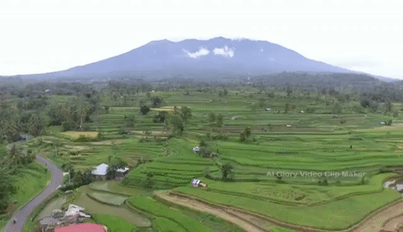

Description
Gunung Merapi (ketinggian puncak 2.930 mdpl, per 2010) (bahasa Jawa: ꦒꦸꦤꦸꦁꦩꦼꦫꦥꦶ, translit. Gunung Mêrapi) adalah gunung berapi di bagian tengah
Pulau Jawa dan merupakan salah satu gunung api teraktif di Indonesia. Lereng sisi selatan berada dalam administrasi Kabupaten Sleman, Daerah
Istimewa Yogyakarta, dan sisanya berada dalam wilayah Provinsi Jawa Tengah, yaitu Kabupaten Magelang di sisi barat, Kabupaten Boyolali di sisi
utara dan timur, serta Kabupaten Klaten di sisi tenggara. Kawasan hutan di sekitar puncaknya menjadi kawasan Taman Nasional Gunung Merapi sejak
tahun 2004.
Gunung Merapi merupakan objek pendakian yang populer. karena gunung ini merupakan gunung yang sangat mempesona. Jalur pendakian
yang paling umum dan dekat adalah melalui sisi utara dari Sélo, Kabupaten Boyolali, Jawa Tengah, tepatnya di Desa Plalangan, Selo, Boyolali,
Desa ini terletak di antara Gunung Merapi dan Gunung Merbabu. Pendakian melalui Selo memakan waktu sekitar 4-5 jam hingga ke puncak.
Jalur populer lain adalah melalui Kaliurang, Kecamatan Pakem, Kabupaten Sleman, Yogyakarta di sisi selatan. Jalur ini lebih terjal dan memakan
waktu sekitar 6-7 jam hingga ke puncak. Jalur alternatif yang lain adalah melalui sisi barat laut, dimulai dari Sawangan, Kabupaten Magelang,
Jawa Tengah dan melalui sisi tenggara, dari arah Deles, Kecamatan Kemalang, Kabupaten Klaten, Jawa Tengah.